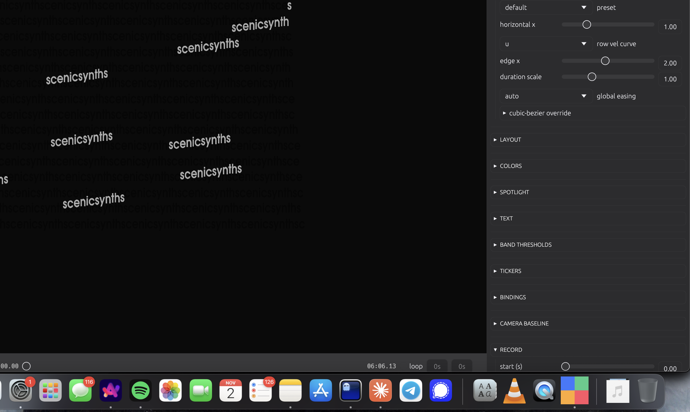

GPU text
Glyph atlas on wgpu / Metal via glyphon. Thousands of animated characters at 60 fps.
Native macOS. Rust + Metal.
Audio-reactive marquee for macOS. Native Metal rendering, 60 fps, zero drops.

Capabilities
A pure-function engine, a GPU text pipeline, and native audio. No browser graph. No dropped frames.
Glyph atlas on wgpu / Metal via glyphon. Thousands of animated characters at 60 fps.
cpal on CoreAudio with symphonia decode. Four-band transient detection drives every motion.
evaluate(t) is a pure function. Same inputs, same frame — every render, every export.
Key-word traversal across rows with configurable frequency, phase offset, and anchor mode.
Zoom, pan, tilt — wired through the same ticker system that drives per-row scroll.
Offline render at any resolution multiplier. ffmpeg now, native AVFoundation H.264 next.
Workflow
Three steps from a raw WAV to a frame-exact MP4.
Produce a four-band transient JSON from your audio with the shared Python analyzer.
npm run analyze -- --input assets/audio/track.wavLaunch the app. Scrub, tune thresholds, pick a feel preset, swap bindings in the side panel.
cargo run --releaseExport to MP4 at any resolution multiplier. Deterministic — what you preview is what you ship.
make render ARGS="--duration 60 --fps 60"Install
Homebrew cask on the tap. macOS 13+ on Apple Silicon or Intel.
brew install --cask danielesiegel/tap/scenic-motion-enginePrefer source? Build from Rust with cargo build --release.